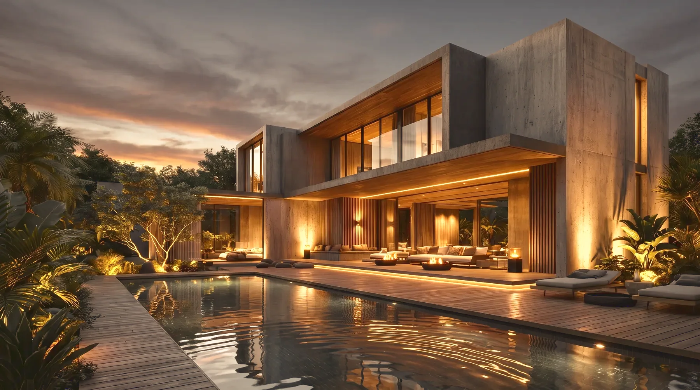
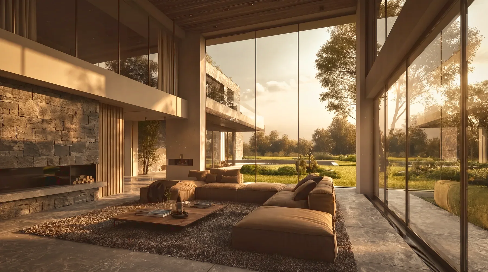
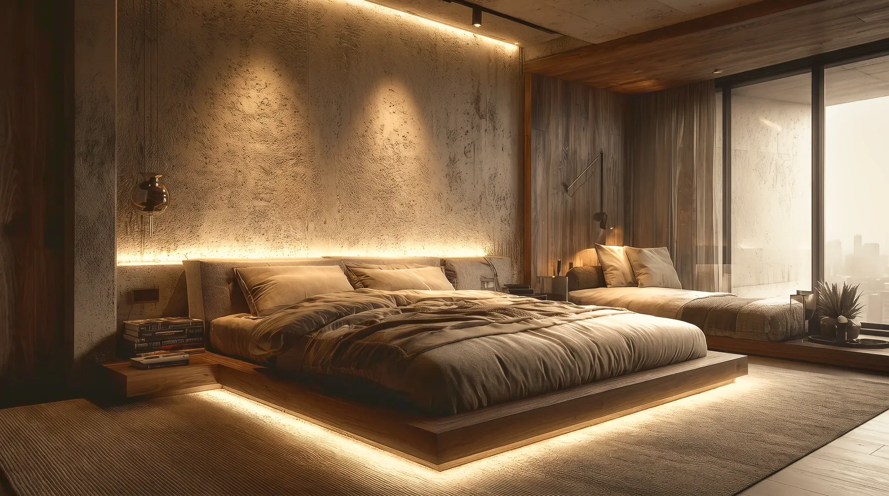

Residential / Full turnkey
Casa Verdura
Emirates Hills, DubaiGarden villa2024
The project
A house that lets the garden in through every wall it can. Concrete volumes are lowered into planting so the garden is never something seen from the house — it is something the house is in. Bedrooms open into glazed pavilions among the trees; the pool holds the facade’s reflection at dusk.
- Project
- Casa Verdura
- Location
- Emirates Hills, Dubai
- Year
- 2024
- Typology
- Garden villa
- Status
- Completed
- Scope
- Interior architectureLandscape integrationFF&ELighting
- Recognition
- Top 50 Homes of Dubai

The spaces
A walk through Casa Verdura
The film
Casa Verdura

The garden is never something seen from the house — it is something the house is in.
Start a project
Your project, next.
Tell us what you’re planning, where it is and what you want to achieve.
Start a project